Parking brake cable ASSY No.3 (4WD) Installation |
| 1. Parking brake cable Assisted |
Parking brake cable ASSY No.3 installation
In the bolt, attach the parking brake cable ASSY No.3 to the backing plate.
As shown in the figure, the 5 bolts are attached to each cable bracket of the parking brake cable Assy No.3.
Parking brake cable Assisted
In the bolt, attach the parking brake cable to No.2 to the backing plate.
As shown in the figure, each cable bracket of the parking brake cable is attached to four bolts.
| 2. Parking brake cable ASSY No.3 connection |
Connect the parking brake cable ASSY No.3 to the parking brake cable equalizer.
| 3. Parking brake cable ASSY No.2 connection |
Connect the parking brake cable ASSY No.2 to the parking brake cable equalizer.
| 4. Backing plate grease coating |
 |
Apply non -Meltrob to the contact between the backing plate and the rear brake shoe ASSY.
| 5. Brake shoe installation (LH side) |
Rear side
Use the needle nose pliers to attach the parking brake lever LH to the parking brake cable Assy No.3.
| 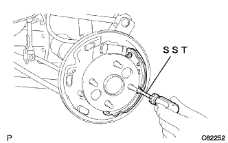 |
Use the SST to attach the brake shoe (rear) with the rear brake shoe hold down spring cup, the rear brake shoe hold down spring and the rear brake shoe holding pin.
Attach the rear brake zeuling spring to the brake shoe (rear side).
Front side
Parking brake shoe trattle set LH is attached to the brake shoe (front side).
Connect the brake shoe (the front side) to the rear brake zeet spring spring.
| 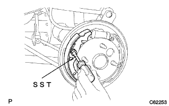 |
Use the SST to attach the brake shoe (front side) with the rear bra lighter hood hold down spring cup, rear brake shoe hold down spring and rear brake shoe hold down spring pin.
Use SST to attach the tension spring to the brake shoe (rear).
| 6. Brake shoe installation (RH side) |
| 7. Rear drum brake installation inspection |
Inspect that each part is properly attached.
| 8. Lear brake drum installation |
| 9. Adjustment between brake drums and lining (LH side) |
| 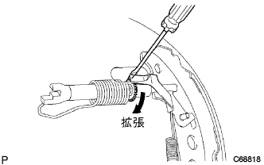 |
Turn the adjuster with a flathead screwdriver from the backing plate service hall, and let the brake shoe ASSY contact the rear brake drum.
| 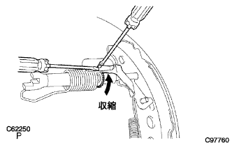 |
Turn the adjuster by turning the adjuster with another flathead screwdriver while pressing the rear brake automatic adjust lever LH with a flathead screwdriver.
The brake shoe Assy is no longer in contact with the rear brake drum, and the adjuster is further reduced to contract to contract.
| 10. Adjustment between brake drums and lining (RH side) |
| 11. Lear tire installation |
| 12. Wire jacasting nut No.1 Temporary tightening |
| 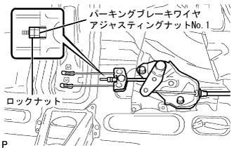 |
Parking brake wire gathering nut No.1 and rock nuts are temporarily tightened.
| 13. Lon floor silence pad SUB-ASSY RR RH installation |
Attach the front floor sirens saspad rh RH.
| 14. Long -floor carpet ASSY FR installation |
| 15. Side No.1 Trim ASSY RH installation |
| 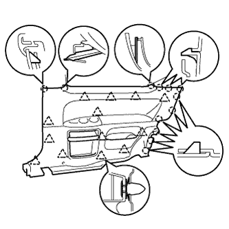 |
Match the clip and claws and attach the side No.1 trim ASSY RH.
| 16. Rear seat 3 point type belt assigned (floor anka part) |
Tighten the rear seat 3 point type belt ASSY OUT RH (floor anka part) with bolts.
| 17. Front sheet otabelt assigned (floor anka part) |
In the bolt, attach the front seat Otabelt Assy RH floor anka.
| 18. List of back hinge SUB-ASSY RH installation |
| 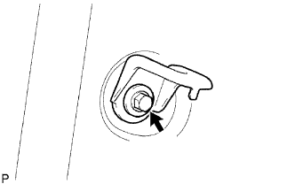 |
At the bolt, attach the rear seat back hinge RH.
| 19. Lap belt Otanka cover installation |
| 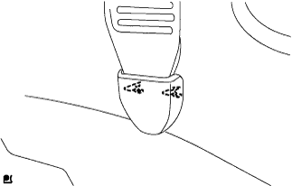 |
Combine the claws and attach the wrap belt Otanka cover.
| 20. Front door opening trimweather strip RH mounting |
 |
Combine the paint mark of the Weather Strip (white, one place) and attach the front door opening trimweather strip RH.
| 21. Cowl side trim board RH installation |
| 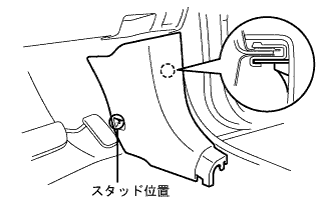 |
Match the claws and studs and attach the cowl side trimboard RH.
| 22. Front doorskuff plate RH installation |
| 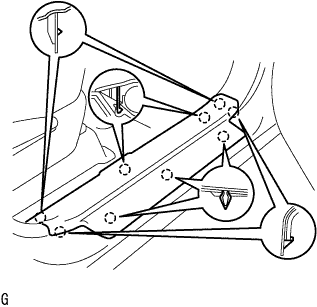 |
The claws at the front and rear ends are used.
Make the claws and attach the front door scuff plate RH.
| 23. Lear seat cushion assessed |
| 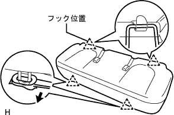 |
Pass the seat belt and make the hook.
Rena seat cushion Assy The clip at the front of the front.
| 24. Lear seat Batsuku ASSY installation |
| 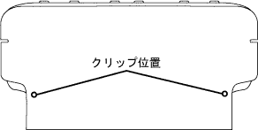 |
Put the rear seat back asser on the vehicle, tentatively attach the hole in the rear seat back frame and the location on the hinge side to temporarily attach the bolt.
Tighten the two bolts and attach the rear seat back Assessy.
Attach two new clips.
| 25. Front seat Assisted |
Operate the seat track adjusting handle to slide the front seat ASSY to make it a front mort.
Put the sheet Assies on the vehicle and match the pins on the front seat leg ASSY RH part and the hole on the vehicle side.
Connect the vehicle side wire harness and the seat side wire harness.
Temporarily tighten the rear side of the seat Assy with two bolts.
Operate the seat truck adjusting handle to slide the front seat ASSY to make it a rear mole.
Temporarily tighten the front side of the sheet Assy with two bolts.
Operate the seat track adjusting handle to slide the front seat ASSY to make it a front mort.
Tighten the two bolts on the rear side of the sheet Assing in order of inner → outa.
Operate the seat truck adjusting handle to slide the front seat ASSY to make it a rear mole.
Tighten the two bolts on the front side of the sheet asser in the order of inner → outa.
The claws of the front seat leg cover are adjusted.
| 26. Slide adjuster lock synchronization inspection |
When the slide is operated, check that the left and right adjuster locks at the same time.
| 27. Battery minor Starminal connection |
| 28. Parking brake pedal stepping check |
Slowly step on the parking brake pedal and count the operating noise.
| 29. Parking brake pedal stepping adjustment |
| 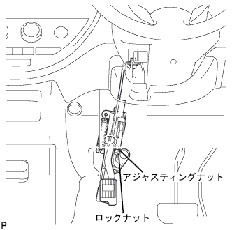 |
Press the parking brake pedal once strongly.
Park the parking brake pedal again and unlock.
Loose the lock nut in the parking brake pedal part, and adjust the adjustment nut so that stepping is a reference value.
Fix the adjustment nut and tighten the rock nut.
After operating the parking brake pedal at least once, check for stepping.
Make sure there is no drag of the parking brake.
When the parking brake pedal is operated, confirm that the brake indigor lamp lights up.